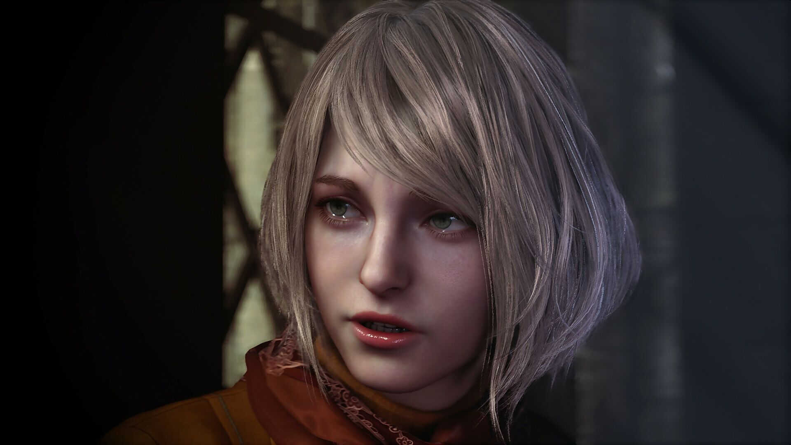
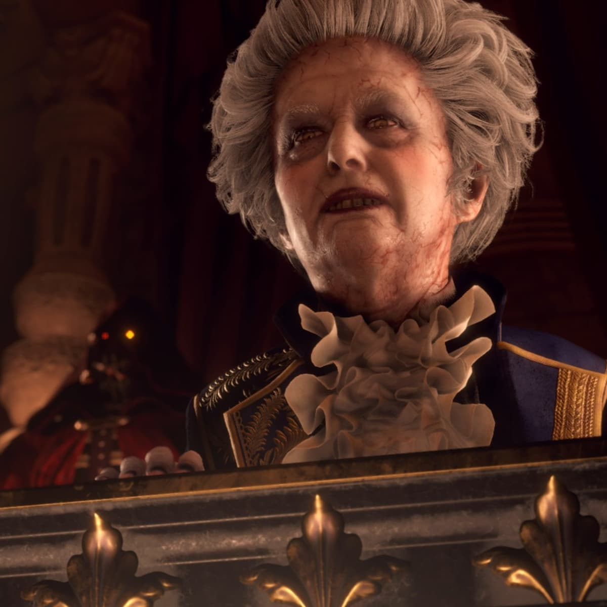
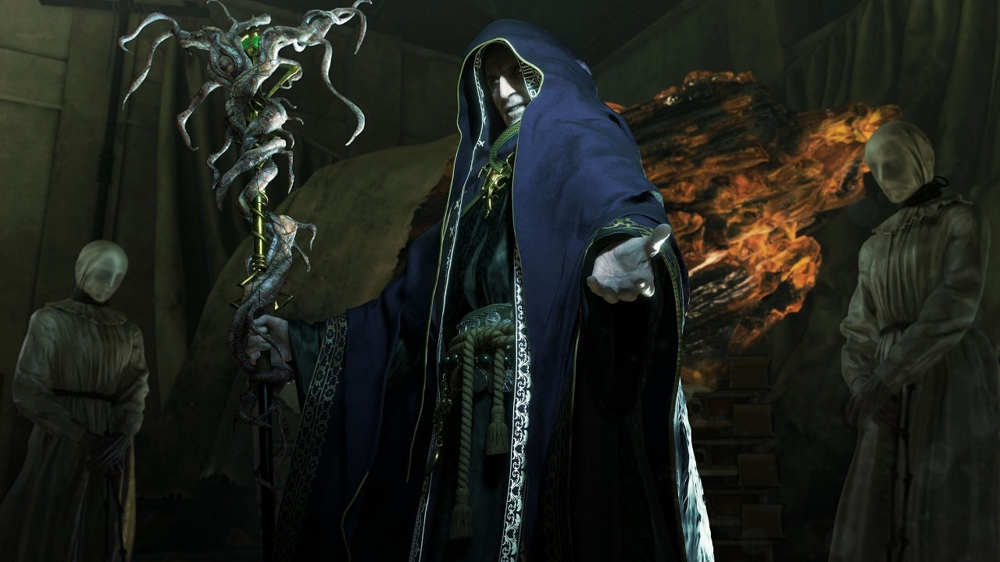

Characters
- Leon S. Kennedy
- Ashley Graham
- Luis Serra
- Ada Wong
- Ramon Salazar
- Osmund Saddler
Leon S. Kennedy
A former Raccoon City police officer turned U.S. government agent. Leon is the main protagonist, sent to rescue the President’s daughter from a mysterious cult in rural Spain. He is able to effectively wield multiple different types of firearms and is skilled in close combat.
Ashley Graham
The U.S. President’s daughter who has been kidnapped by a cult. Leon is tasked with locating and protecting her throughout the game. Although she is unable to wield weapons or assist in combat, she does aid Leon throughout their journey.
Luis Serra
A former researcher who aids Leon. He has knowledge of the cult’s parasite and a complex backstory that unfolds through the game. At first presented as a mysterious untrustworthy figure, he proves himself later in the game.
Ada Wong
A mysterious spy with ambiguous motives. Ada operates independently and crosses paths with Leon multiple times. She presents herself as a stoic human lacking morals; only living for a paycheck.
Ramon Salazar
One of the game’s antagonists. Despite his youthful appearance, Salazar is a dangerous cult leader who controls the region Leon must explore. Salazar taunts Leon throughout the game believing he is inferior to his royal status.
Osmund Saddler
The game's main antagonist. Lord Saddler was the one to discover the parasite known as Las Plagas and uses it to control other humans. He acts as the hivemind of the parasite as they respond to his every command. He wishes to spread the parasite all over the world to give himself complete control.